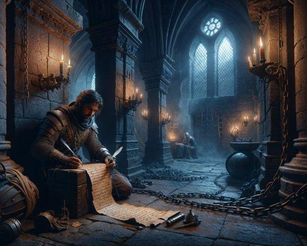

Tu réussis finalement à rencontrer l'ancien chevalier. À ta grande surprise, il ne tente pas de te tuer. Il t'explique qu'il a volé le parchemin parce qu'il contient la preuve d'un complot contre le roi.
Un puissant seigneur préparerait une rébellion et aurait infiltré la garde royale. Le chevalier te remet le parchemin et te révèle une dernière information : le traître se trouve actuellement au château, aux côtés du roi.
Tu réalises que ta mission ne fait que commencer. Retourner secrètement au château pour démasquer le traître, ou t'allier au chevalier et rassembler une armée avant de revenir ? La suite du destin du royaume dépend de toi.